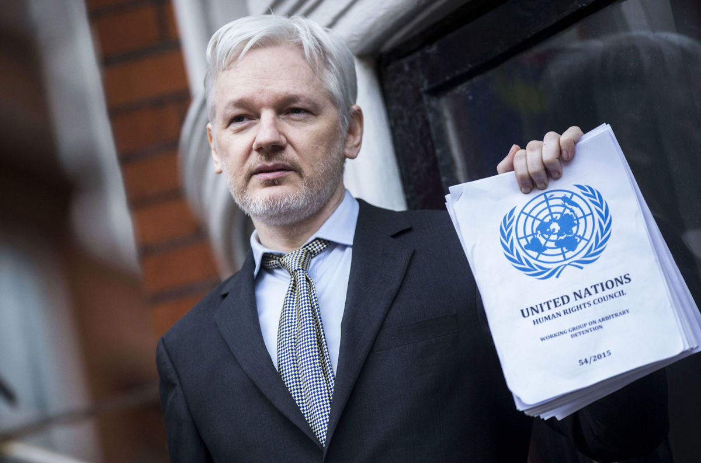

Julian Assange
Informaticien, journaliste et fondateur de Wikileaks



Qui est Julian Assange ?
Julian Assange est un informaticien et journaliste australien, qui fonda Wikileaks en 2006. Il a été récompensé par de nombreux prix pour son travail journalistique, après avoir révélé de nombreuses affaires concernant des cas d’évasion fiscale, d’espionnage d’Etat ou encore des crimes de guerre.
Wikileaks & Assange
- 2006 - Fondation de Wikileaks
- Janvier 2008 - Wikileaks s'est procuré et a publié des documents de la banque suisse Julius Bäer, qui prouvaient qu’au moins 1 600 clients de la banque possédaient des comptes dans une de ses filiales aux îles Caïman.
- Mai 2008 - Wikileaks publie les premières ébauches de l’ACTA. Cela a permis aux citoyens des pays concernés de prendre conscience du projet et de se mobiliser contre cet accord. Grâce à cela, une procédure plus démocratique de négociation fut demandée et obtenue.
- 2009 - Juste avant l’effondrement du système bancaire, Wikileaks a révélé que la banque Kaupthing a prêté des sommes anormalement élevées à certains particuliers privilégiés, et qu’elle a aussi procédé à l’effacement injustifié de leurs dettes.
- 2010 - Avec la collaboration des journaux The Guardian, The New York Times, Der Spiegel, Le Monde et d’autres, Wikileaks publie 91 000 documents secrets portant sur la guerre en Afghanistan. On y découvre entre autre que sur 109.000 morts, 66.000 étaient des civils.
- Avril 2010 - Wikileaks a récupéré et diffusé des vidéos de bavures de l’armée américaine, commises lors d’un raid aérien le 12 Juillet 2007. On y voit l’armée tirer sur des civils, dont deux photographes de l’agence Reuters. C’est avec cette affaire que Wikileaks et Julian Assange deviennent mondialement connus.
- 2011 - Wikileaks a réitéré l’opération, sur la banque suisse Julius Bäer, révélant cette fois-ci 2000 comptes de riches personnalités, entreprises et personnalités politiques.
- 2010-2012 - Julian Assange est placé en liberté surveillée au Royaume-Uni à cause d’un mandat d’arrêt de la justice suédoise. Il est accusé de « délit sexuel ». La Cour suprême de Royaume-Uni finit par rejeter sa demande de ne pas être extradé vers la Suède en Mai 2012.
- 2013 - Wikileaks apporte un soutien logistique au lanceur d’alerte Edward Snowden, en organisant et accompagnant sa fuite de Hong Kong.
- Juin 2015 - Wikileaks révèle que la NSA a écouté les 3 présidents français Jacques Chirac, Nicolas Sarkozy et François Hollande. Plus encore, le site révèle que les écoutes s’élargissent à toute la classe politique, pour servir des fins diplomatiques et économiques. Une semaine plus tard, en partenariat avec Libération et Médiapart, Wikileaks publie de nouveaux documents sur l’espionnage perpétué à l’encontre des entreprises du CAC40, toujours par la NSA.
- 2021 - Depuis son arrestation, Julian Assange est emprisonné dans une prison de haute sécurité pour terroristes. Il est actuellement dans l’attente du verdict de son procès, qui sera rendu le 4 janvier 2021. C’est également à cette date que la justice anglaise se prononcera sur la demande d’extradition des Etats-Unis. Il risque 175 ans de prison pour son travail de journaliste.
"L'une des meilleures façon d'obtenir la justice est de dévoiler les injustices."
- Julian Assange